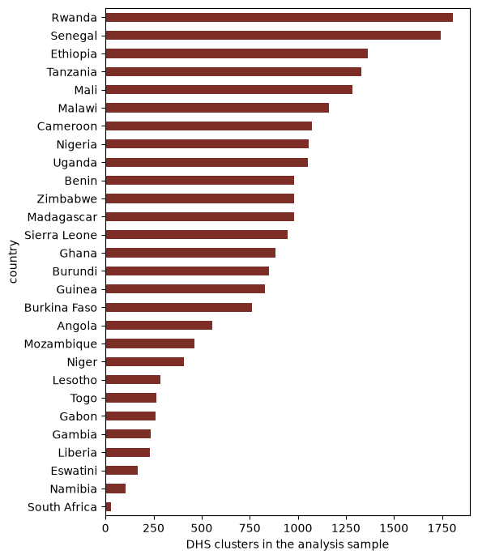
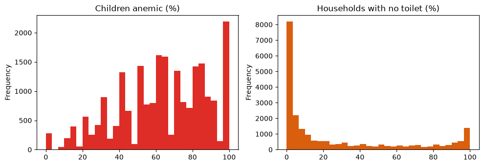

import numpy as np
import pandas as pd
import pyreadstat
from config import DHS_FILE, PRIVATE, SSA, MIN_CHILDRENStep 1. Turn DHS child records into one row per survey cluster.
Input : IPUMS-DHS extract (private) Output: data/private/clusters.parquet (private: contains GPS)
Run on the author’s computer. The DHS data are private, so the outputs shown here are summaries only (no cluster locations or survey records).
cols = ["sample", "country", "year", "idhspsu", "intyear", "monthint", "urban",
"wealthq", "educlvl", "kidalive", "kidagemo", "anemialvlkid",
"opentoiletpsu", "gpslat", "gpslong", "perweight"]print("Reading DHS extract (this takes a few minutes)...")
d, meta = pyreadstat.read_dta(str(DHS_FILE), usecols=cols)
print(f" {len(d):,} child records, {d.country.nunique()} countries")Reading DHS extract (this takes a few minutes)...
3,015,819 child records, 63 countriesflow = [("All child records", len(d))]
def keep(mask, label):
global d
d = d[mask]
flow.append((label, len(d)))keep(d.country.isin(SSA.keys()), "Sub-Saharan Africa")
keep(d.kidalive == 1, "Child alive")
keep(d.kidagemo.between(6, 59), "Aged 6-59 months")
keep(d.anemialvlkid.isin([1, 2, 3, 4]), "Tested for anemia")
ok_gps = d.gpslat.notna() & d.gpslong.notna() & ~((d.gpslat == 0) & (d.gpslong == 0))
keep(ok_gps, "Cluster has GPS coordinates")
keep(d.opentoiletpsu.between(0, 100), "Cluster open defecation share available")
keep(d.urban.isin([1, 2]), "Urban/rural known")d["anemic"] = (d.anemialvlkid <= 3).astype(float) # any anemia (Hb < 11 g/dL, altitude-adjusted)
d["mod_sev"] = (d.anemialvlkid <= 2).astype(float) # moderate or severe
d["mom_secondary"] = np.where(d.educlvl.isin([0, 1, 2, 3]), (d.educlvl >= 2).astype(float), np.nan)
d["country_name"] = d.country.map(SSA)
d["wealthq_ok"] = d.wealthq.where(d.wealthq.between(1, 5))g = d.groupby("idhspsu")
cl = pd.DataFrame({
"sample": g["sample"].first(),
"country": g["country_name"].first(),
"survey_year": g["year"].first(),
"int_year": g["intyear"].agg(lambda s: s.mode().iat[0]).astype(int),
"int_month": g["monthint"].agg(lambda s: s.mode().iat[0]).astype(int),
"urban": (g["urban"].first() == 1).astype(int),
"lat": g["gpslat"].first(),
"lon": g["gpslong"].first(),
"n_children": g.size(),
"anemia_pct": g["anemic"].mean() * 100,
"modsev_anemia_pct": g["mod_sev"].mean() * 100,
"od_pct": g["opentoiletpsu"].first(),
"wealth": g["wealthq_ok"].mean(), # mean household wealth quintile, 1 = poorest, 5 = richest (relative to own country)
"mom_secondary_pct": g["mom_secondary"].mean() * 100,
}).reset_index()n_before = len(cl)
cl = cl[cl.n_children >= MIN_CHILDREN].copy()
flow.append((f"Children in clusters with >= {MIN_CHILDREN} tested children", int(cl.n_children.sum())))cl.to_parquet(PRIVATE / "clusters.parquet", index=False)
pd.DataFrame(flow, columns=["step", "remaining"]).to_csv(PRIVATE / "sample_flow.csv", index=False)print(pd.DataFrame(flow, columns=["step", "remaining"]).to_string(index=False))
print(f"Clusters: {n_before:,} -> {len(cl):,} kept; {cl.country.nunique()} countries; "
f"{cl['sample'].nunique()} surveys; years {cl.int_year.min()}-{cl.int_year.max()}")
print(cl.groupby("country").size().sort_values(ascending=False).to_string())
print(cl[["anemia_pct", "od_pct", "wealth", "mom_secondary_pct", "n_children"]].describe().round(2).to_string()) step remaining
All child records 3015819
Sub-Saharan Africa 1475438
Child alive 1363997
Aged 6-59 months 751676
Tested for anemia 319126
Cluster has GPS coordinates 284974
Cluster open defecation share available 258530
Urban/rural known 258530
Children in clusters with >= 5 tested children 236822
Clusters: 29,943 -> 22,097 kept; 28 countries; 68 surveys; years 2000-2021
country
Rwanda 1805
Senegal 1742
Ethiopia 1366
Tanzania 1332
Mali 1285
Malawi 1162
Cameroon 1075
Nigeria 1055
Uganda 1054
Benin 983
Madagascar 982
Zimbabwe 982
Sierra Leone 946
Ghana 883
Burundi 852
Guinea 829
Burkina Faso 762
Angola 555
Mozambique 462
Niger 410
Lesotho 285
Togo 265
Gabon 261
Gambia 234
Liberia 232
Eswatini 167
Namibia 103
South Africa 28
anemia_pct od_pct mom_secondary_pct n_children
count 22097.00 22097.00 22097.00 22097.00
mean 63.46 26.67 21.52 10.72
std 24.21 34.28 28.01 6.43
min 0.00 0.00 0.00 5.00
25% 45.45 0.00 0.00 7.00
50% 66.67 8.00 10.00 9.00
75% 83.33 47.37 33.33 13.00
max 100.00 100.00 100.00 88.00Clusters per country
import matplotlib.pyplot as plt
ax = cl.country.value_counts().sort_values().plot.barh(figsize=(6, 7), color="#7b2d26")
ax.set_xlabel("DHS clusters in the analysis sample")
plt.tight_layout(); plt.show()
How anemia and open defecation are distributed across clusters
fig, axes = plt.subplots(1, 2, figsize=(10, 3.5))
cl.anemia_pct.plot.hist(bins=30, ax=axes[0], color="#de2d26", title="Children anemic (%)")
cl.od_pct.plot.hist(bins=30, ax=axes[1], color="#d95f0e", title="Households with no toilet (%)")
plt.tight_layout(); plt.show()